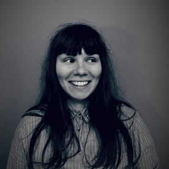

<div class="about-wrapper">
  <div class="about-top">
    <h2>About</h2>
    <p>
      Originally from Sweden, I have lived in Scotland since 2012 when I moved
      here to study a joint undergraduate in Archaeology and Classics at
      University of Glasgow.
    </p>
    <p>
      After finishing my undergrad I did my Master of Science in International
      Heritage Visualisation at the Glasgow School of Art where I got a taste
      for programming and decided to pursue it further.
    </p>

    <p>
      I did courses in Web development and Programming at Luleå University of
      Technology before applying to the Web Designer Course Package at
      University West (Högskolan Väst).
    </p>
    <p>
      The course package included modules in Graphical Design, Web Development,
      UX/UI Design, Responsive Design and the Semantic Web.
    </p>

    <p>
      I worked as a freelance web designer after studying. 
    </p>
    <p>Currently living in Glasgow and working as a Software Developer.</p>
    
    <div class="skills">
      <h3>Skills</h3>
      <p>
        Figma GIMP Adobe XD UX/UI Design Responsive Web Design CSS SASS
        Bootstrap HTML JavaScript jQuery Angular SQL PHP Laravel 
      </p>
    </div>
  </div>
</div>
